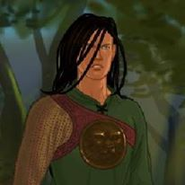
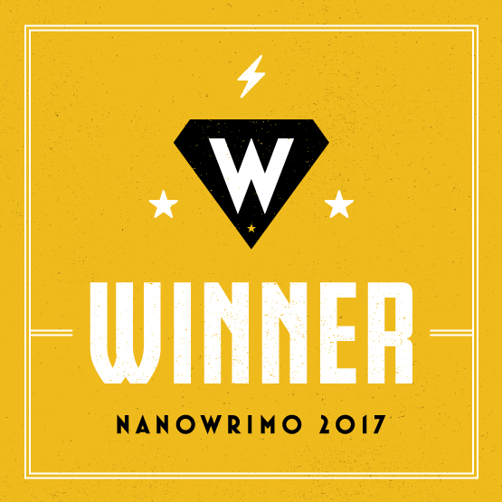

When I'm not reading for coursework, or working to find some reading for my field, I could relax and choose to let myself unwind. But anyone who knows me knows that would be totally out of character. Instead, I choose to continue keeping myself busy. Here, I explain a little bit about the work I do outside of my academic exploits.
Hogwarts is Here

The first and foremost of my activities beyond academia is the work I do for a website called Hogwarts is Here, a Harry Potter fan site that allows you to engage with the magical world in a new and fun way. Run by volunteers, Hogwarts is Here allows you to create a persona within the magical world, take "real" Hogwarts classes, including Defense Against the Dark Arts, Potions, Ancient Runes, and many more! I volunteer to teach on the site using the name Jericho Penrose, and serve as the Professor for Defense Against the Dark Arts, as well as Slytherin Head of House. I have done this volunteer work since 2015 and always found it to be a rewarding experience. As I have taught Defense Against the Dark Arts, I have found ways to incorporate my scholarly interest of folklore into my work, which allows me to both do what I love and also further my knowledge of my field of study. In this position, I write lessons of no less than 1000 words, I review lessons written by other professors to check for typos, grammar, continuity with the Harry Potter canon, continuity with the Hogwarts is Here canon, and many other factors to help make these lessons as good as they can be! Sometimes the work piles up, but it has helped me learn a lot about my own ability to manage my time, and also helped me find amazing people who I know will be part of my life for a long time to come.
As Head of House, I have even more responsibilities, because I am the main staff point of contact for students in Slytherin House when issues arise. I do work with my fellow Heads of Houses and the Deputy Headmistress to come to reasonable resolutions to each situation, but in the end, the students who come to me are looking for me to have an answer. This has required me to develop my professional persona, so that I may appear calm, cool, and collected at all times, even when a situation is escalating to an extreme extent.
National Novel Writing Month

The second main hobby that I have outside of my academic work only happens during the month of November. This event, known as National Novel Writing Month, is an event that happens every year. It encourages people to sit down and explore any creative writing idea that they have had, but never taken the time to work on. It encourages them to embrace the challenge of writing 50,000 words in just 30 days. And, more importantly, it works to provide opportunities for youth and school age kids to have opportunities to read and write that they may never have had before. I have participated in NaNoWriMo since 2011, accomplishing the goal each and every year. Some of my manuscripts are less developed and will stay in their NaNoWriMo folder on my computer, but others may be pursued further.